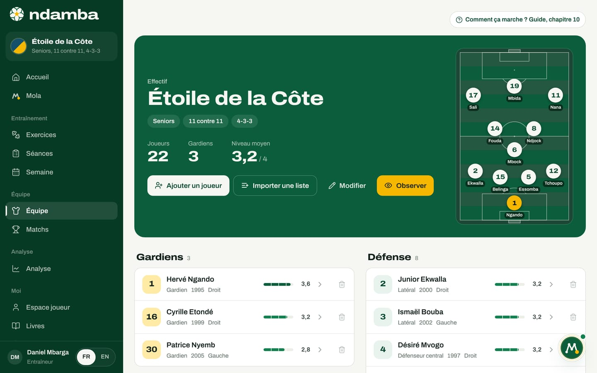
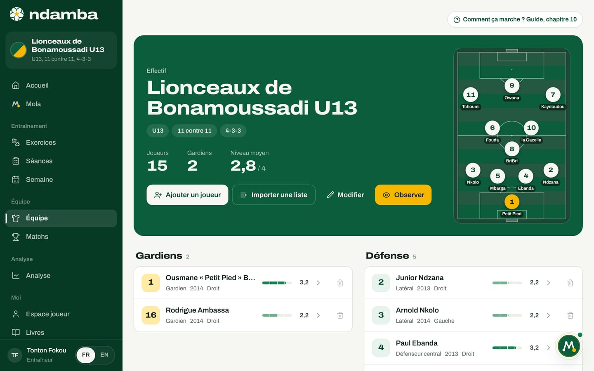
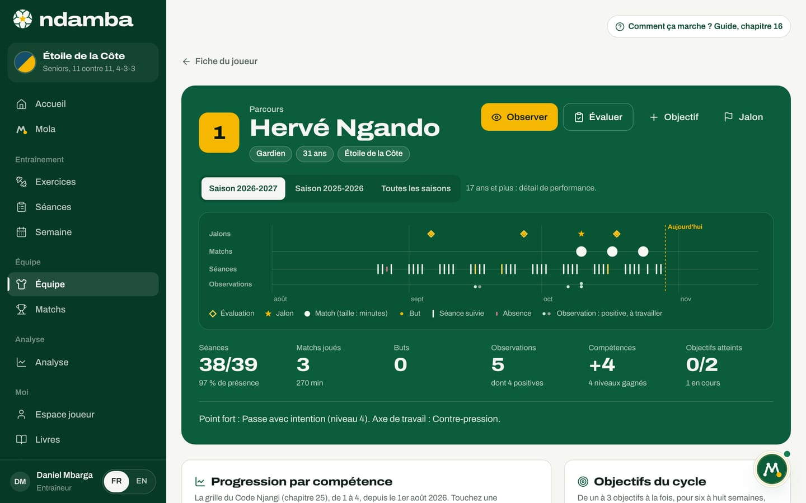
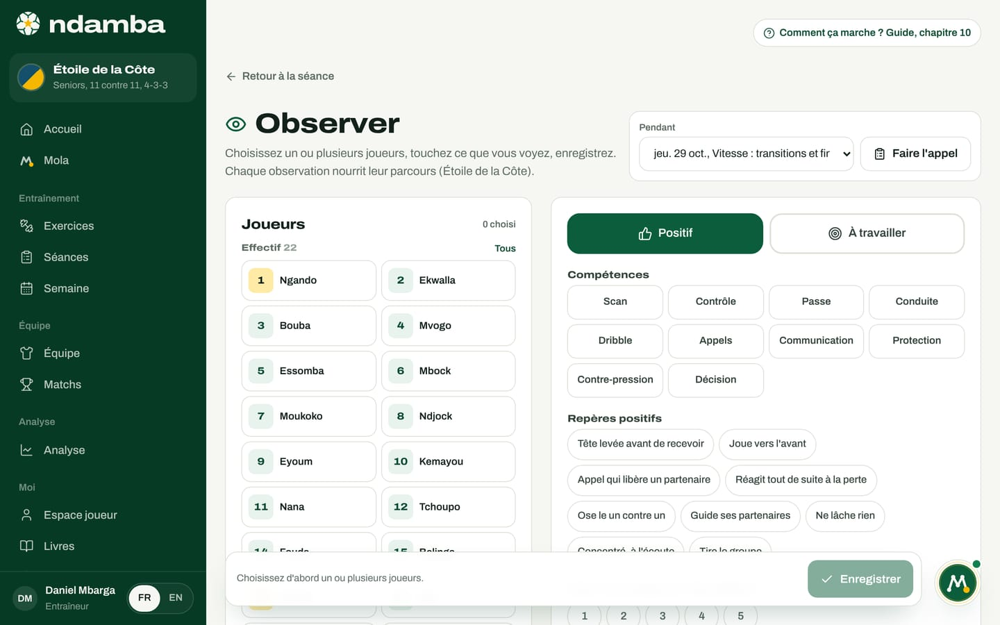

L’effectif et la fiche joueur
L’effectif de l’équipe, la fiche de chaque joueur et ses dix compétences, son parcours saison après saison, et l’écran Observer qui nourrit ce parcours en quelques touches.
10 min de lecture
Dans beaucoup de clubs et d’académies, l’histoire d’un joueur tient dans la mémoire de son entraîneur et dans un cahier. Elle se perd quand l’entraîneur s’en va, quand l’enfant monte de catégorie ou quand le cahier prend la pluie. Ndamba part de l’idée inverse : chaque joueur a une fiche, chaque séance et chaque match y laissent une trace, et cette trace le suit d’une saison à l’autre. C’est la continuité dont parle ce guide, appliquée à un seul joueur. Ce chapitre présente l’effectif, la fiche joueur, le parcours et l’écran Observer.
L’effectif en un coup d’œil
Ouvrez Équipe dans le menu, sous le groupe Équipe (sur téléphone, dans l’onglet Plus). Le haut de la page est une plaque verte au nom de l’équipe : la mention Effectif, la catégorie, le format (11 contre 11, par exemple), le système de départ, puis trois chiffres. Joueurs et Gardiens comptent l’effectif ; Niveau moyen donne la moyenne, sur 4, des compétences évaluées, sans compter les joueurs encore jamais évalués.
Quatre boutons servent au quotidien : Ajouter un joueur, Importer une liste, Modifier (l’équipe) et Observer. Sur un grand écran, un petit terrain montre la composition que Ndamba proposerait dans votre système, avec la logique du bouton Composer automatiquement du chapitre 11.


Sous la plaque, les joueurs sont rangés en quatre lignes : Gardiens, Défense (centraux et latéraux), Milieu (pivots, milieux intérieurs et offensifs) et Attaque (ailiers et attaquants), dans l’ordre des numéros. Chaque ligne montre le numéro (sur fond jaune pour un gardien), le nom, le poste, l’année de naissance, le pied fort et une barre de niveau sur 4, ou Non évalué. Touchez la ligne pour ouvrir la fiche ; la corbeille retire le joueur. Si vous encadrez plusieurs équipes, un sélecteur en haut de la plaque change l’équipe affichée dans toute l’application.
Créer et régler l’équipe
Sans équipe, la page propose Créer l’équipe. La fenêtre Nouvelle équipe demande le Nom de l’équipe, la Catégorie (de U7 à U20, ou Seniors), le Format de jeu (de 5 contre 5 à 11 contre 11) et le Système de départ, celui que Ndamba proposera pour chaque nouveau match (la liste est au chapitre 11). Modifier rouvre la même fenêtre, sous le titre Modifier l’équipe.
Ajouter les joueurs
Un joueur à la fois :
- Touchez Ajouter un joueur.
- Remplissez Nom, le seul champ obligatoire. Un surnom écrit entre guillemets, comme « Petit Pied », devient le nom de maillot sur le terrain et dans Observer ; sinon Ndamba prend le dernier mot du nom.
- Indiquez le Numéro, de 0 à 99. S’il est déjà pris, la mention Déjà porté vous prévient, sans bloquer.
- Choisissez le Poste : Gardien, Défenseur central, Latéral, Pivot, Milieu intérieur (par défaut), Milieu offensif, Ailier ou Attaquant.
- Ajoutez l’Année de naissance et le Pied fort, facultatifs. L’année de naissance donne l’âge, et l’âge décide de ce que le parcours affiche.
- Touchez Ajouter, ou Ajouter et continuer pour saisir le suivant sans fermer la fenêtre (le poste est conservé).
Toute la liste d’un coup : touchez Importer une liste et collez un nom par ligne, la liste que vous envoyez déjà sur WhatsApp. Le numéro est facultatif, en début de ligne (« 8 BriBri », « #8 BriBri ») ou en fin de ligne. Choisissez un Poste pour tous, vérifiez l’aperçu, puis touchez le bouton qui compte les joueurs, par exemple Importer 15 joueurs. Vous ajusterez ensuite chaque poste depuis la fiche, avec Modifier.


Pour retirer un joueur, touchez la corbeille de sa ligne, ou Retirer de l’effectif sur sa fiche, puis confirmez avec Retirer. Il quitte l’effectif, ainsi que la composition, le banc et le brassard des matchs qui ne sont pas encore joués. Les actions déjà codées restent dans les rapports. Le retrait ne s’annule pas, et le parcours du joueur n’est plus affiché ensuite : en cas de doute, gardez-le.
La fiche joueur
En haut de la fiche : le numéro, le nom, le poste, la génération (Génération 2013, par exemple), le pied fort et la Moyenne sur 4, avec les boutons Modifier et Retirer de l’effectif.

La fiche se lit en six blocs.
Le parcours de la saison. Une plaque verte, par exemple « Parcours, saison 2026‑2027 », résume la saison en cours sur une petite frise et en quatre chiffres : Séances (présences sur appels faits), Matchs joués (avec les minutes), Observations et Objectifs, le nombre d’objectifs en cours. Elle mène à Observer et Ouvrir le parcours.
Les dix compétences. C’est la grille du chapitre 25 du Code Njangi. Chaque compétence a sa définition et quatre niveaux : 1 Découverte, 2 Construction, 3 Acquis, 4 Référence. Touchez un niveau pour évaluer, touchez-le à nouveau pour l’effacer ; Voir la grille déplie la description des quatre niveaux. La règle est écrite sur l’écran : on note ce qu’on a vu en jeu, sur plusieurs séances, pas ce qu’on espère.
| Compétence | Ce que l’on regarde |
|---|---|
| Scan | Regarder autour de soi avant de recevoir |
| Contrôle orienté | Recevoir en orientant le ballon vers l’espace libre ou la suite de l’action |
| Passe avec intention | Une passe qui sert l’une des cinq intentions, au bon partenaire et au bon rythme |
| Conduite | Avancer avec le ballon pour progresser ou attirer, tête levée |
| Dribble njangi | Dribbler pour attirer, fixer, puis donner ou éliminer |
| Appels et courses pour les autres | Se déplacer sans ballon pour recevoir ou libérer un partenaire |
| Communication | Une information courte et utile, au bon moment |
| Protection du ballon | Garder le ballon sous pression avec le corps et les appuis |
| Contre-pression | Réagir tout de suite à la perte pour reprendre le ballon dans les 5 secondes |
| Prise de décision | Choisir au bon moment la solution qui sert le mieux l’équipe |
Chaque changement de niveau sur la fiche est aussi enregistré comme l’évaluation du jour dans le parcours : l’historique ne se perd jamais.
Le profil. Dès trois compétences évaluées, un radar dessine le portrait du joueur, avec en pointillés la Moyenne de l’équipe : un portrait, pas un total.
Les notes de l’entraîneur. Un champ libre, enregistré tout seul (Enregistré).
La contribution en match. Les actions codées en direct et attribuées à ce joueur (chapitre 12) : matchs codés, titularisations, Passes réussies, détail des actions et tableau Match par match.
Les exercices conseillés. Ndamba repère les deux compétences les plus fragiles (évaluées en dessous de 4) et propose jusqu’à quatre exercices de la bibliothèque qui les travaillent.
Le parcours, saison après saison
Touchez Ouvrir le parcours. Une saison va du 1er août au 31 juillet. Le haut de la page reprend le joueur (poste, âge, équipe) et quatre actions : Observer, Évaluer, Objectif et Jalon. Des boutons choisissent la saison, ou Toutes les saisons. Une phrase rappelle ce que la page montre selon l’âge : moins de 13 ans, des repères simples, jamais de classement ; de 13 à 16 ans, la progression et des repères de match ; 17 ans et plus, le détail de performance.


La frise montre la saison sur quatre lignes : Jalons, Matchs (la taille du point suit les minutes jouées), Séances (suivies ou manquées) et Observations. Sous la frise, les chiffres de la saison : Séances (présences sur appels faits), Matchs joués et minutes, Buts (affichés à partir de 17 ans, ou dès le premier but), Observations et combien sont positives, Compétences (niveaux gagnés depuis le début de saison) et Objectifs atteints, avec dessous le nombre d’objectifs encore en cours. Une phrase conclut : Point fort, puis Prochaine marche (ou Axe de travail à partir de 17 ans).
Plus bas, la page se déroule ainsi :
- Progression par compétence : dix petites courbes. Touchez-en une pour l’agrandir, avec sous la courbe les preuves en jeu (points pleins pour le positif, cercles pour l’à travailler), Ce que l’on observe aujourd’hui et la marche suivante de la grille, avec le niveau visé.
- Le fil du parcours : tout ce qui s’est passé, du plus récent au plus ancien, mois par mois, avec des filtres Tout, Jalons, Évaluations, Observations, Matchs, Séances et Objectifs. Une observation ou une évaluation se supprime d’un geste, avec Annuler pour revenir en arrière.
- Objectifs du cycle : de un à trois objectifs à la fois, pour six à huit semaines, liés à une compétence ou à un sous-indice de l’Indice Njangi. Ndamba propose la compétence la plus fragile et une phrase tirée de la grille (Reprendre la suggestion). Au bilan, Où en est-on ? offre En cours, Atteint, En partie ou Pas encore, et une note Ce que l’on retient.
- En match pour les moins de 17 ans (les actions qui font jouer l’équipe, sans comparaison), ou Performance de la saison à partir de 17 ans (actions rapportées à 90 minutes, part des actions de l’équipe, minutes par match).
- Les grands moments : le premier match, la première titularisation, le premier but, le premier brassard, les paliers de matchs joués et chaque compétence qui atteint Acquis ou Référence s’ajoutent seuls. Avec Jalon, vous ajoutez le reste : Convocation, Changement de catégorie, Capitanat, Distinction, Blessure, Retour de blessure ou Autre.
Évaluer ouvre une évaluation complète et datée, préremplie avec les niveaux actuels, et affiche pour chaque compétence les observations recueillies depuis la dernière évaluation : vous décidez avec des preuves sous les yeux. Pour un mineur, l’écran conseille de partager le profil avec sa famille, en commençant par ses points forts.
Les présences viennent de Faire l’appel (dans la séance ou dans Observer), les minutes du bouton Temps de jeu de la feuille de match (chapitre 11). Le joueur voit son propre parcours depuis son espace (chapitre 16).
Observer : noter ce que l’on voit
Une évaluation juste repose sur plusieurs observations, faites en jeu, sur plusieurs séances. L’écran Observer sert à les recueillir vite, pendant une séance ou un match. Il s’ouvre depuis la plaque de l’effectif, la fiche, le parcours, la carte Présences et observations d’une séance, la feuille de match ou le codeur en direct.


En haut à droite, le sélecteur Pendant donne le contexte : Hors séance (aujourd’hui), une séance récente ou un match récent. Ndamba choisit seul le match en direct ou du jour, sinon la séance du jour. Pendant une séance, Faire l’appel range ensuite les joueurs en Présents, Pas encore pointés et Absents. Pendant un match, ils sont rangés en Titulaires, Remplaçants et Autres joueurs, et un champ Minute apparaît.
- Touchez un ou plusieurs joueurs. Tous choisit un groupe entier, Effacer vide le choix.
- Choisissez le ton : Positif ou À travailler.
- Touchez les compétences concernées. Chacune prend le ton choisi ; touchez-la à nouveau pour l’enlever.
- Touchez les repères rapides, qui changent avec le ton : Repères positifs ou Repères à travailler.
- Si vous le voulez, donnez une Note de la séquence de 1 à 5 (elle reste dans le parcours, jamais dans un classement) et écrivez une Note en une phrase, ou touchez Dicter si votre navigateur le permet.
- Touchez Enregistrer (ou Enregistrer pour 3 joueurs, par exemple). Un message confirme, avec Annuler en cas d’erreur.
Les repères liés à une compétence comptent comme une preuve pour elle :
| Repère positif | Compte pour | Repère à travailler | Compte pour |
|---|---|---|---|
| Tête levée avant de recevoir | Scan | Tête baissée à la réception | Scan |
| Joue vers l’avant | Passe | Joue en arrière sans raison | Passe |
| Appel qui libère un partenaire | Appels | Reste immobile sans ballon | Appels |
| Réagit tout de suite à la perte | Contre-pression | S’arrête après la perte | Contre-pression |
| Ose le un contre un | Dribble | Perd le ballon au contact | Protection |
| Guide ses partenaires | Communication | Joue en silence | Communication |
| Ne lâche rien | aucune | Se précipite | Décision |
| Concentré, à l’écoute | aucune | Distrait, décroche | aucune |
| Tire le groupe | aucune | Gère mal la frustration | aucune |
Sous le formulaire, la liste Observations de cette séance (ou Observations de ce match, Observations du jour) montre ce qui est déjà noté, avec une corbeille par ligne. L’encadré Observer sans se tromper donne la méthode : un joueur à la fois pendant 8 à 10 minutes, et seulement ce que la situation a montré.
Chaque observation rejoint le parcours des joueurs choisis : dans le fil et sur la frise, dans les chiffres de la saison, en preuve sous la courbe de la compétence et dans la fenêtre Évaluer, et dans les objectifs en cours. La compétence la plus souvent notée à travailler devient en général la prochaine marche. Trois touches au bord du terrain, et la mémoire du joueur s’écrit seule.